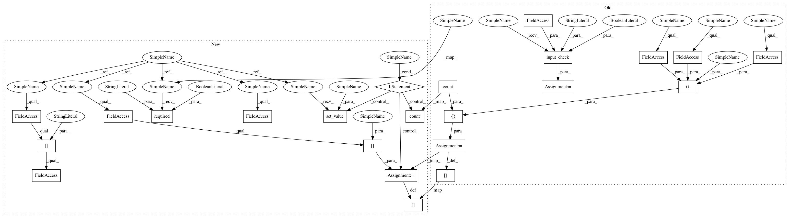

1672b5a9a47b081aa3e61c9f2ca76fae26ed8730,cheml/wrappers/cheml_cml/cheml_wrapper.py,Merge,fit,#Merge#,377
Before Change
def fit(self):
// step1: check inputs
df1, df1_info = self.input_check("df1", req=True, py_type=pd.DataFrame)
df2, df2_info = self.input_check("df2", req=True, py_type=pd.DataFrame)
// step2: assign inputs to parameters if necessary (param = @token)
self.paramFROMinput()
// step3: check the dimension of input data frame
df1, _ = self.data_check("df1", df1, ndim=2, n0=None, n1=None, format_out="df")
df2, _ = self.data_check("df2", df2, ndim=2, n0=df1.shape[0], n1=None, format_out="df")
// step4: import module and make APIs
try:
from cheml.initialization import Merge
df = Merge(df1, df2)
except Exception as err:
msg = "@Task //%i(%s): "%(self.iblock+1, self.SuperFunction) + type(err).__name__ + ": "+ err.message
raise TypeError(msg)
// step5: process
// step6: send out
order = [edge[1] for edge in self.Base.graph if edge[0] == self.iblock]
for token in set(order):
if token == "df":
self.Base.send[(self.iblock, token)] = [df, order.count(token),
(self.iblock, token, self.Host, self.Function)]
else:
msg = "@Task //%i(%s): asked to send a non valid output token "%s"" % (self.iblock+1,self.SuperFunction,token)
raise NameError(msg)
After Change
// Basic Operators
class Merge(BASE):
def fit(self):
// step1: check inputs
self.required("df1", req=True)
df1 = self.inputs["df1"].value
self.required("df2", req=True)
df2 = self.inputs["df2"].value
// step2: assign inputs to parameters if necessary (param = @token)
// self.paramFROMinput()
// step3: check the dimension of input data frame
df1, _ = self.data_check("df1", df1, ndim=2, n0=None, n1=None, format_out="df")
df2, _ = self.data_check("df2", df2, ndim=2, n0=df1.shape[0], n1=None, format_out="df")
// step4: import module and make APIs
try:
from cheml.initialization import Merge
df = Merge(df1, df2)
except Exception as err:
msg = "@Task //%i(%s): "%(self.iblock+1, self.Task) + type(err).__name__ + ": "+ err.message
raise TypeError(msg)
// step5: process
// step6: send out
order = [edge[1] for edge in self.Base.graph if edge[0] == self.iblock]
for token in set(order):
if token not in self.outputs:
msg = "@Task //%i(%s): not a valid output token "%s"" % (self.iblock + 1, self.Task, token)
raise NameError(msg)
elif token == "df":
self.set_value(token, df)
self.outputs[token].count = order.count(token)
self.Base.send[(self.iblock, token)] = self.outputs[token]
// step7: delete all inputs from memory
del self.inputs
In pattern: SUPERPATTERN
Frequency: 3
Non-data size: 23
Instances
Project Name: hachmannlab/chemml
Commit Name: 1672b5a9a47b081aa3e61c9f2ca76fae26ed8730
Time: 2017-11-12
Author: mojtabah@buffalo.edu
File Name: cheml/wrappers/cheml_cml/cheml_wrapper.py
Class Name: Merge
Method Name: fit
Project Name: hachmannlab/chemml
Commit Name: 1672b5a9a47b081aa3e61c9f2ca76fae26ed8730
Time: 2017-11-12
Author: mojtabah@buffalo.edu
File Name: cheml/wrappers/cheml_cml/cheml_wrapper.py
Class Name: Merge
Method Name: fit
Project Name: hachmannlab/chemml
Commit Name: 1672b5a9a47b081aa3e61c9f2ca76fae26ed8730
Time: 2017-11-12
Author: mojtabah@buffalo.edu
File Name: cheml/wrappers/cheml_cml/cheml_wrapper.py
Class Name: Split
Method Name: fit
Project Name: hachmannlab/chemml
Commit Name: 1672b5a9a47b081aa3e61c9f2ca76fae26ed8730
Time: 2017-11-12
Author: mojtabah@buffalo.edu
File Name: cheml/wrappers/cheml_cml/cheml_wrapper.py
Class Name: SaveFile
Method Name: fit